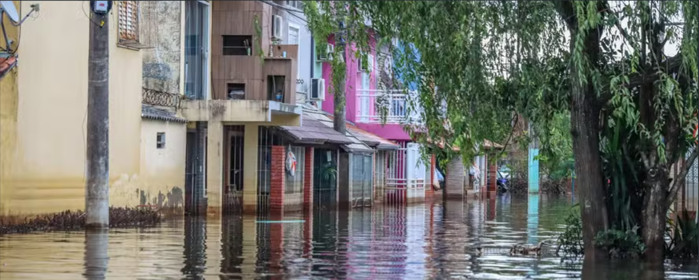

RECUPERAÇÃO PÓS-ENCHENTE
SEGURANÇA AO RETORNAR
As doenças causadas pelo contato com água e lama é um dos muitos transtornos das enchentes
Em sua passagem pelas áreas urbanas ou rurais, a água das enchentes agrega resíduos e microorganismos de várias origens, podendo contaminar e provocar doenças nas pessoas que com ela tenham contato direto ou indireto. Deste modo, é importante que durante tais eventos se evite, ao máximo, a exposição à água das enchentes.
Além disso, os resíduos contidos nessas águas, na forma de lama, podem impregnar e também contaminar todos os locais atingidos pelas enchentes, como pisos, paredes, móveis e outros objetos existentes nas residências. Assim, alguns cuidados devem ser adotados para prevenir doenças durante e depois das enchentes:
- Evite contato com as águas das enchentes. Caso isto seja inevitável, permaneça o menor tempo possível na água ou na lama. Não deixe que crianças nadem ou brinquem na água e na lama das enchentes, pois, além do perigo das enxurradas, eles podem ficar doentes. Ao retornar para casa após uma enchente, evite pisar diretamente na água ou na lama ou manusear objetos que tenham sido atingidos por ela. Proteja os pés e as mãos com botas e luvas de borracha ou sacos plásticos duplos.
- Jogue fora medicamentos e alimentos (frutas, legumes, verduras, carnes, grãos, leites e derivados, enlatados etc.) que entraram em contato com as águas da enchente, mesmo que estejam embalados com plásticos ou fechados, pois, ainda assim, podem estar contaminados.
- Lave bem as mãos antes de preparar alimentos e ao se alimentar.
- Procure beber sempre água potável, que não tenha tido contato algum com as enchentes, e a utilize no preparo dos alimentos, especialmente das crianças menores de um ano. Para garantir que a água é segura para consumo, ferva-a por ao menos um minuto, ou adicione duas gotas de hipoclorito de sódio com concentração de 2,5% (água sanitária) para cada litro de água.
- Os frascos de hipoclorito de sódio a 2,5%, próprio para diluir na água de beber e cozinhar, podem ser encontrados em farmácias ou supermercados. Em situações de enchentes mais intensas, geralmente os órgãos de Defesa Civil e Vigilância Sanitária distribuem gratuitamente o produto à população atingida. Na falta dessas opções, utilize água sanitária, tomando o cuidado de adquirir apenas aquelas que tenham registro e não contenham outras misturas, como perfumes.